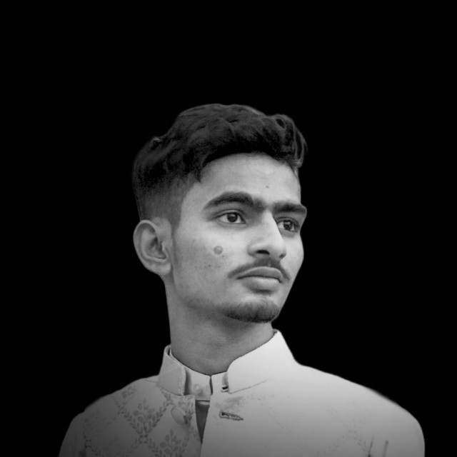

About

Tauhid Ansari
Hardware Engineer · PCB Designer
I design and build printed circuit boards — from schematic capture to layout to bring-up — with a focus on USB, power delivery, and small-form-factor consumer hardware.
Most of my work lives in KiCad, where I take projects from concept through routing, 3D verification, and into manufacturable Gerbers. Outside of paid work, I build things for myself: USB hubs, power tools, and whatever idea won't leave me alone until it's etched in copper.
Skills
PCB Design
Schematic Capture
Layout & Routing
Signal Integrity
Power Design
Reverse Engineering
Hardware
USB 2.0 / USB-C
USB-PD
OTG
SMD Soldering
Bring-up & Debug
Tools & Software
KiCad
Fusion 360
Git
GitHub Pages
Currently exploring
USB-PD negotiation ICs
3D model pipelines for web
4-layer stack-up design